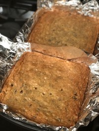

Blondies
October 2, 2021 by Alex Chin
My recipe for making blondies is quite simple. The ingredients consist of butter, brown sugar, eggs, vanilla extract, salt flour and any additional add-ins you want.
For directions, you want to start off by pre-heating your oven to 350 degrees farenheit while you prepare the blondie mixture.
 While the oven is pre-heating, melt 1/2 a stick of butter and add it to the bowl you will be mixing everything in. Then add 1 cup of brown sugar, one egg, 2 teaspoons of vanilla extract and a pinch of salt and mix until well combined.
Add 1 cup of flour and fold into mixture until fully encorporated. Finally, add any extra add-ins you want. Chocolate chips, hazelnuts and dried fruit are a few examples of add-ins you can use.
When everything is combined, transfer mixture to a 9x9 square baking pan and bake for 20-25 minutes. Once out of the oven, let rest for 20 minutes and enjoy.
Mushroom Wontons
October 2, 2021 by Alex Chin
Rather than using the traditional fillings for wontons like pork or shrimp, my mushroom wontons recipe puts a vegetarian spin on the chinese dumpling.
The ingredients consist of mushrooms, salt, pepper, cayenne, garlic, green onion, soy sauce, sesame oil, heavy cream, nutmeg, parmesan cheese and wonton wrappers.
Ensure high heat is used when cooking the filling for the wontons.
For directions, stir fry 3 cups of chopped mushrooms in a neutral oil until most of the moisture leaves the mushrooms. Then add 6 cloves of crushed garlic and 1/3 cup sliced green onions and cook until softened.
Next add 2 tablespoons of soy sauce, 1 teaspoon sesame oil, 2 cups heavy cream, 3/4 cup parmesan cheese and a pinch of nutmeg and simmer until fully encorporated. Season to taste with salt and pepper and then set aside to cool.
Portion the mushroom mixture into wonton wrappers and fold however best suits you, using water to seal the edges. Bake wontons at 400 degrees farenheit for 6 minutes or deep fry in a neutral oil until golden brown. Recipe comfortably makes 2 dozen wontons.